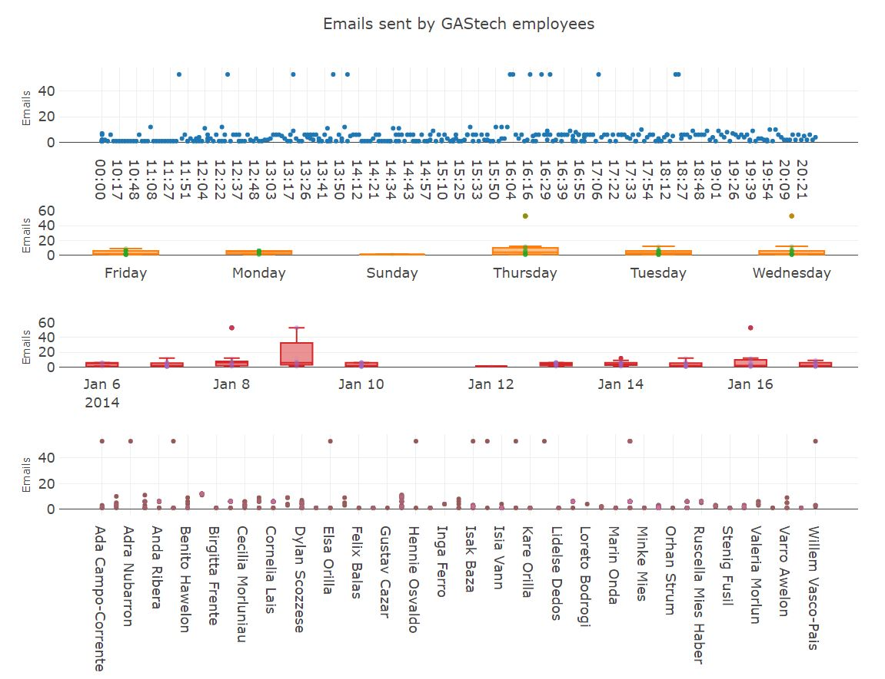

A Visual Exploration for VAST Challenge 2021 - The Kronos Incident
Lim Jin Ru (Alethea) 1
Arulmozhi Baskaran Mayurapriyann 1
Yeo Ding Run (Darius) 1
Mentor: Associate Professor Kam Tin Seong 1
1 Singapore Management University
Introduction & Motivation
With the time urgency in solving crimes, it is necessary to help law enforces visualize patterns and anomalies efficiently to provide them the necessary leads for the case. They also need to be able to interact with the data easily to perform various what-if analysis. The application’s motivation is driven by the discussed user needs as well as to obtain an efficient end-to-end environment of data pre-processing, data visualization creation and analysis. The objective is to provide the law enforcement agencies in Kronos and Tethys with an analytic tool for discovering visual behaviors and patterns of the network relationships in emails, credit card transactions and car movement paths.
Issues & Problems
The following issues and problems were addressed by our project.
- Static visualizations tend to have many overlapping issues.
- Our interactive application allows users to filter and zoom in on selected data.
- Our interactive application allows users to filter and zoom in on selected data.
- Both static visualizations and many minimally interactive visualizations that had been performed on this case study are not able to draw out hidden patterns. For example, in the network graphs, many visualizations did not make use of the edges and nodes characteristics to represent additional information about the relationships.
- To address the issue, our project combines eigenvector centrality and community detection in the visNetwork graph, introduced bipartite network graph to model matching data between credit card transaction and location and employ tmap on a Raster image to visualize GAStech employees’ vehicle movement across different datetime.
- To address the issue, our project combines eigenvector centrality and community detection in the visNetwork graph, introduced bipartite network graph to model matching data between credit card transaction and location and employ tmap on a Raster image to visualize GAStech employees’ vehicle movement across different datetime.
- Most visualizations performed in non open-source platforms does not allow user to replicate the visualization easily.
- Our project uses R programming, enabling high reproducibility for users.
Approach
Figure 1: Process Flow
Below are the tools used for building the application:
Figure 2: Tools
Exploratory Data Analysis
The Plotly interactive scatterplot and box plots also allow us to see patterns easily as crosstalk was activated between these plots. The box plots also help inform us of anomalies. For example, there are outliers in terms of number of emails sent on a Thursday and Wednesday and the investigators can highlight these anomalies to get more information on who sent it and when they sent it.

Figure 3: Exploratory Analysis
Network Analysis
The network plot shows the relationship of employees through their email interactions. The arrows represent the direction of the email sent. The email subjects in the data table in the visualization also provide more information about the nature of the interactions. The node sizes are a reflection of the nodes’ eigenvector centrality. Eigenvector centrality measures a node’s importance while giving consideration to the importance of its neighbors and a person with few connections could have a very high eigenvector centrality if those few connections were to very well-connected others. There are many filter functions in the network visualization to enable end user to select the information they need for a focused or general analysis.
Figure 4: Network Analysis
Bipartite Network Analysis
The bipartite network graph is very useful in modeling matching information in a visually informative manner. In our application, We can easily see the card transactions of GAStech employees at various locations at specific date, time and frequency depending on the user’s filtering choice at the sidebar panel. There is also a data table in the visualization to allow user to get further information of transaction price.
Figure 5: Bipartite Network Analysis
Geospatial Analysis
GPS coordinates where the employees tend to stop the vehicles for more than 2 minutes are plotted as bubbles on the map. Transparency threshold is set on the bubbles in order to overcome the overlapping issues due to multiple input selections. Tool tips are also utilized efficiently and effectively to display the information such as department, designation, date, vehicle start time and stop time. Data table containing the credit card details and timestamp of the transactions are displayed below so that the users can infer the owners of the credit cards.
Figure 6: Geospatial Analysis
Results
All visualizations provide new perspectives in interacting with the data to uncover patterns and anomalies.
With all visualizations, user can identify possible formal and informal relationships. For instance, informal relationships can be covered through focusing on non-work related emails that are likely a result of personal relationships, after-work vehicle movement to demonstrate movement patterns in their personal time, after work transaction purchases at the same location and time by the GAStech employees could suggest that they might be together at the same location, possibly meeting each other.
With bipartite network visualization, user can visualize the transaction patterns of GAStech employees and also uncover frequent places that GAStech employees go to at specific date and time.
The spatial data visualization also allows user to infer the identity of the credit card owners by comparing the data table and their vehicle stopping location shown on the map.
The network data visualization allows user to infer who are the most influential employees, communities detected through the email interactions to help us uncover relationship in groups that might be otherwise undetected.
Future Work
In future, we could explore whether the node colors could dynamically change depending on selection of grouping by department or Eigenvector centrality interactively on the Shiny app itself. The Bipartite Network plot can be further improved in the future to incorporate the centrality measures filter.
The Shiny application can also be refined further to allow users to select various network layouts to see which one helps to better visualize the community relationship in the network. This give users the autonomy and additional interactivity feature by enabling them to explore the network layout to use that can better support their visual analysis.
At present, cross talk linked brushing functionality is not compatible with tmaps and VisNetwork. In future, we would be able to use linked brushing for tmaps and VisNetwork with data tables or other compatible widgets if crosstalk expands their existing compatible HTML widgets to those widgets.